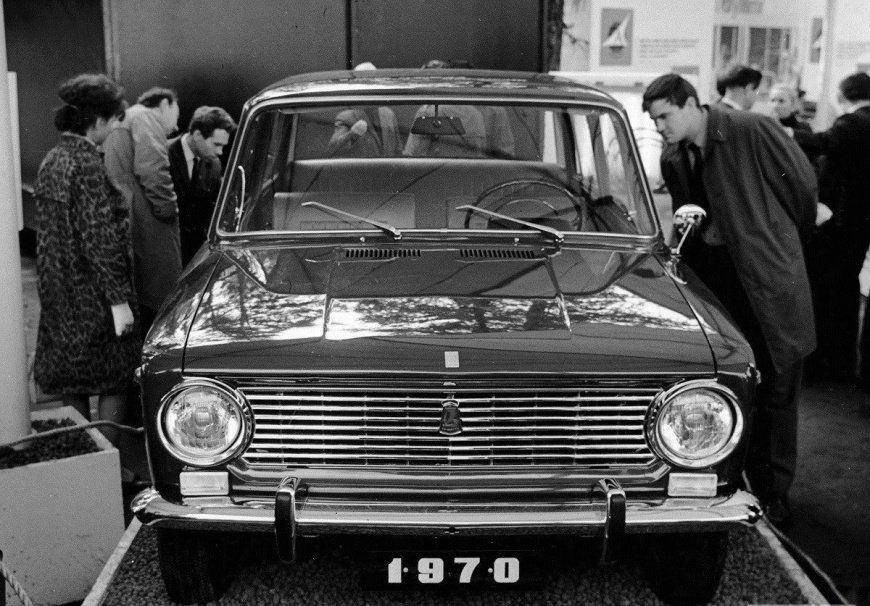

История автомобилей ВАЗ
История автомобилей Mitsubishi
Исторические моменты
Открытие завода
Первый автомобиль
Количество выпущенных автомобилей
Годы выпуска
Надежность автомобилей
- Первый Mercedes
- Первый БМВ
- Первый Ягуар
- 1. Год рождения ВАЗ 2101
- 1.1 Наследован от Фиат 124
- 1.2 Было изменено более 10000 элементов конструкции
- 2. Первый ВАЗ на выставке в музее
